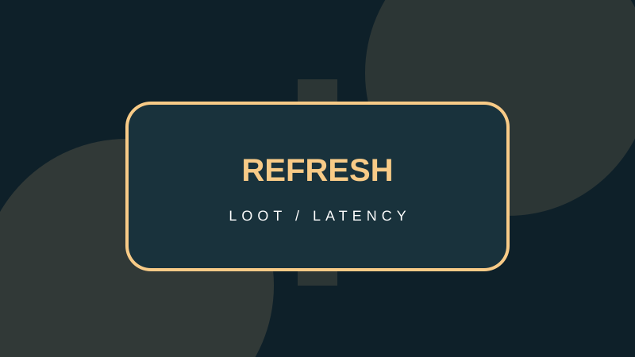
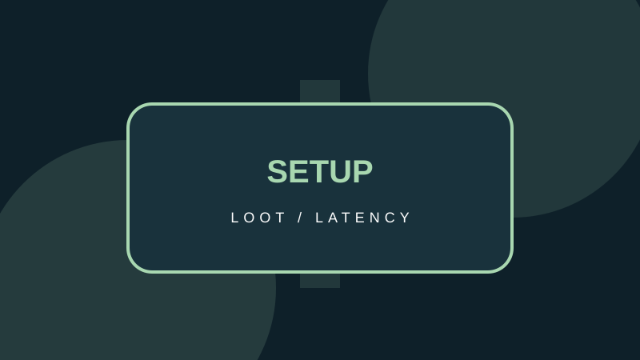
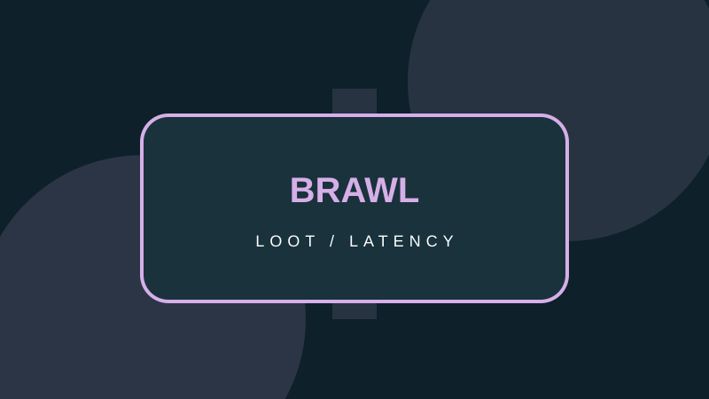

YOUR NEXT LEVEL STARTS HERE.
Browse practical, genuinely useful gaming guides. Pick a topic, search a problem, and get back to playing.

How to Back Up Game Saves Without Losing Progress
Protect your progress with safer cloud-sync checks, local backups, and restore precautions.
Read the guide
Controller Stick Drift: How to Diagnose and Fix It Safely
Safe tests, dead-zone adjustments, and repair decisions before replacing your gamepad.
Read the guide
How to Increase FPS Without Buying New Hardware
Safe, practical steps for smoother PC games: graphics settings, heat, drivers, and frame pacing.
Read the guide
How to Reduce Ping in Online Games
A practical, no-hype checklist for lower latency, steadier connections, and fewer frustrating spikes.
Read the guideThe No-Regret Gaming Laptop Buying Guide
Understand GPUs, thermal limits, memory, displays and upgrades before paying for a logo.
Read the guideStutter vs. Lag: Find the Real Bottleneck
Learn to distinguish frame-time spikes from network issues and troubleshoot the right system.
Read the guide
60 Hz vs. 120 Hz: Is the Upgrade Worth It?
Refresh rate, frame rate, response time, and the small details that shape motion clarity.
Read the guideController Settings That Make Sense
Find a comfortable baseline for sensitivity, dead zones and aim response without copying a pro blindly.
Read the guide
Mobile Gaming: Less Heat, More Consistency
Protect battery comfort and improve sustained performance on phones and handhelds.
Read the guide
Build a Gaming Setup Budget Without Regret
A clear framework for prioritizing performance, comfort and accessories at any price point.
Read the guide
Enjoy Free-to-Play Games Without Overspending
Keep your favorite multiplayer games fun while understanding optional purchases and pressure tactics.
Read the guide
Brawl Stars: Win More by Playing the Objective
Practical positioning, teamwork and replay habits that work beyond any single meta.
Read the guide
Clash Royale: Six Habits to Improve Your Matches
Practice smarter elixir trades, calm defense and deliberate deck choices.
Read the guide
Pokémon Challenge Runs: Make Familiar Games New
Build a balanced challenge ruleset with themed teams, Nuzlocke-inspired rules and realistic difficulty.
Read the guideNo matches yet.
Try a different search or choose another category.